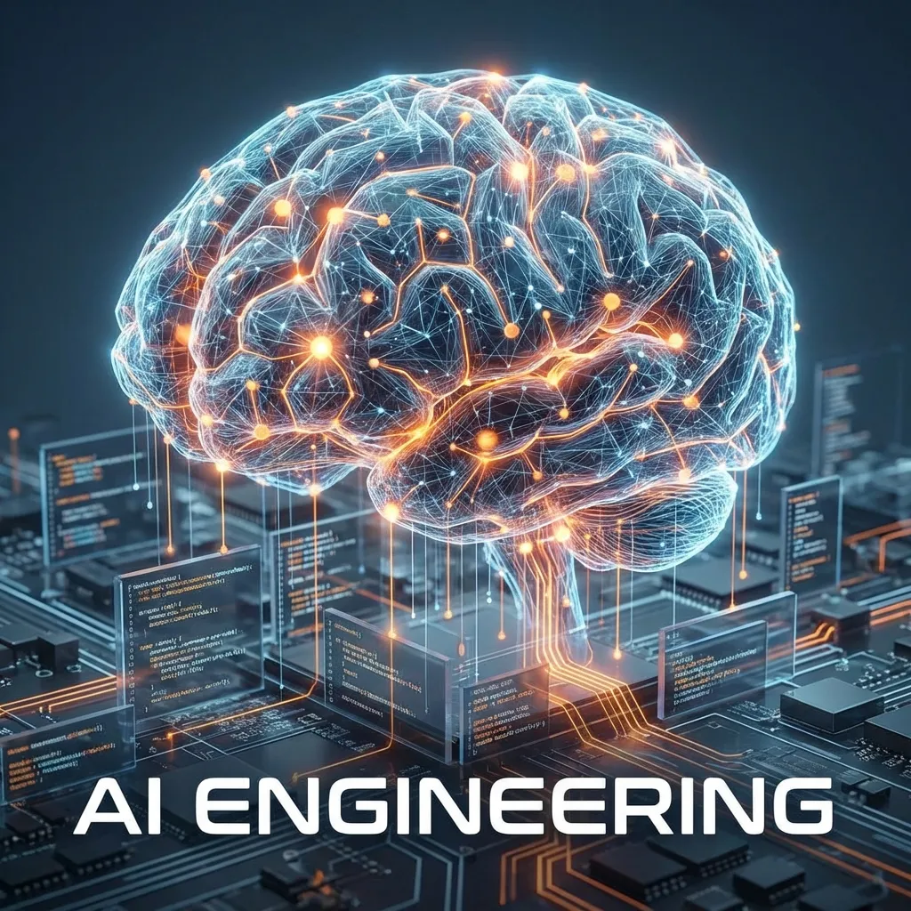

هندسة الذكاء الاصطناعي
بناء الأنظمة الذكية التي تشكل المستقبل.

المنهج الدراسي
من معالجة البيانات إلى التعلم العميق، مبني على أساس منطق علوم الحاسوب.
الوحدة الأولى: الأسس الرياضية
-
الجبر الخطي، والتفاضل والتكامل المخصص لتعلم الآلة، والاحصاء الاحتمالي الضروري لمنطق الذكاء الاصطناعي.
الوحدة الثانية: تعلم الآلة
+
التعلم الخاضع للإشراف وغير الخاضع للإشراف، والانحدار، والتصنيف، وهندسة الميزات.
الوحدة الثالثة: التعلم العميق
+
الشبكات العصبية، والرؤية الحاسوبية، ومعالجة اللغات الطبيعية (NLP)، والمحولات (Transformers).
الوحدة الرابعة: نشر الذكاء الاصطناعي
+
تحسين النماذج، وتكامل واجهات برمجة التطبيقات (APIs)، ونشر أنظمة الذكاء الاصطناعي على نطاق واسع.
النتائج المهنية
مهندس تعلم آلة
تصميم وبناء نماذج تعلم آلة جاهزة للإنتاج.
عالم بيانات
استخراج الرؤى من البيانات المعقدة لتوجيه القرارات التجارية.
باحث ذكاء اصطناعي
توسيع آفاق الذكاء الاصطناعي من خلال الأبحاث المبتكرة.